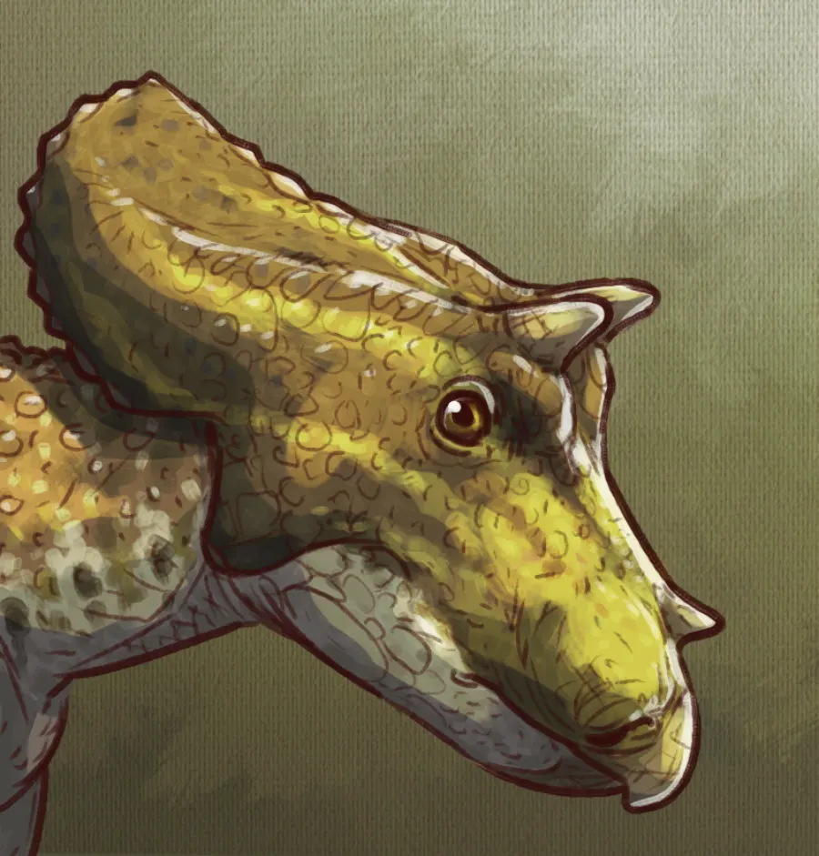
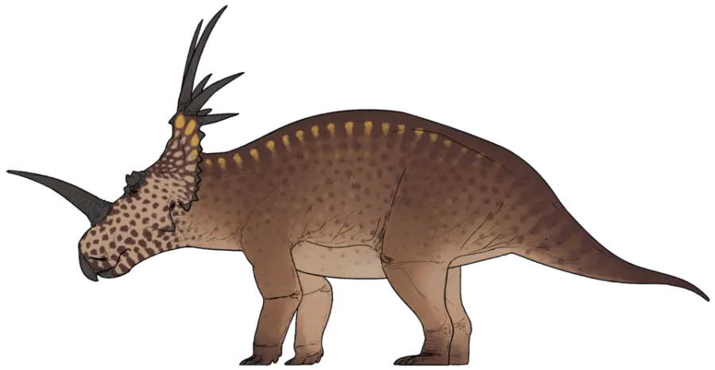
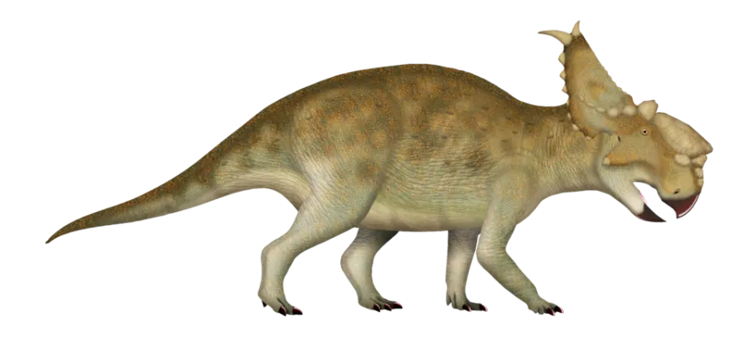

🐃 Famille
Cératopsiens
Cornes sur le nez, collerette derrière la tête et bec de perroquet.
🔎 Ce qui les caractérise
Ces herbivores à quatre pattes vivaient en troupeaux. Leur collerette osseuse et leurs cornes servaient à se défendre, mais surtout à se reconnaître et à parader.
Les 3 membres de ce groupe

Triceratops Trois cornes, une collerette géante et un caractère bien trempé. 🌸 Crétacé 🌿 Herbivore
Styracosaurus Une couronne de six grandes pointes autour de la tête : un vrai soleil vivant. 🌸 Crétacé 🌿 Herbivore
Pachyrhinosaurus Pas de corne sur le nez : une énorme bosse d’os à la place ! 🌸 Crétacé 🌿 Herbivore